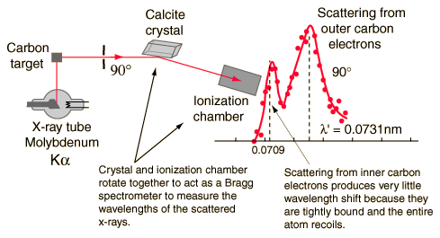

Compton Scattering Data

Compton's original experiment made use of molybdenum K-alpha x-rays, which have a wavelength of 0.0709 nm. These were scattered from a block of carbon and observed at different angles with a Bragg spectrometer. The spectrometer consists of a rotating framework with a calcite crystal to diffract the x-rays and an ionization chamber for detection of the x-rays. Since the spacing of the crystal planes in calcite is known, the angle of diffraction gives an accurate measure of the wavelength.
Examination of the Compton scattering formula shows that the scattered wavelength depends upon the angle of scattering and also the mass of the scatterer. For scattering from stationary electrons, the formula gives a wavelength of 0.0733 nm for scattering at 90 degrees. That is consistent with the right-hand peak in the illustration above. The peak which is near the original x-ray wavelength is considered to be scattering off inner electrons in the carbon atoms which are more tightly bound to the carbon nucleus. This causes the entire atom to recoil from the x-ray photon, and the larger effective scattering mass proportionally reduces the wavelength shift of the scattered photons. Putting the entire carbon nuclear mass into the scattering equation yields a wavelength shift almost 22,000 times smaller than that for an unbound electron, so those scattered photons are not seen to be shifted.
|